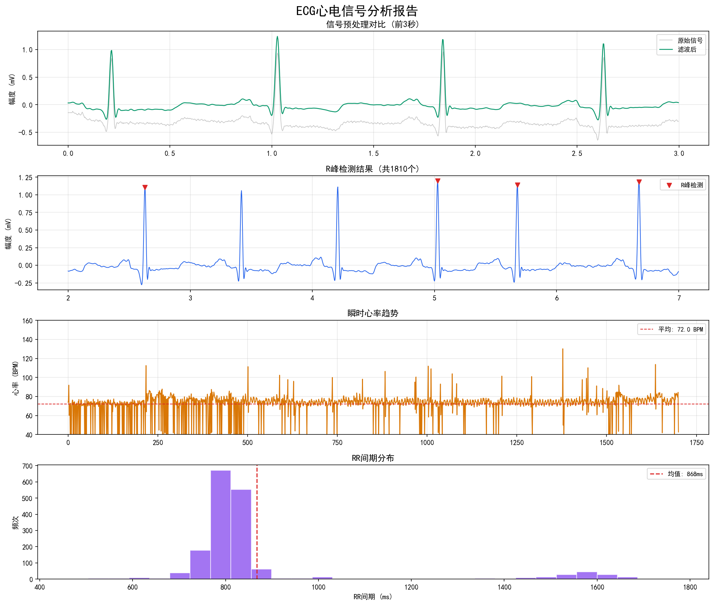

BioSignal Analyzer — 基于 MIT-BIH 数据库 + Pan-Tompkins 算法

左上：原始信号 vs 滤波后 | 右上：R峰检出标记 | 左下：瞬时心率趋势 | 右下：RR间期分布直方图
| 组件 | 说明 |
|---|---|
| 数据源 | MIT-BIH 心律失常数据库 (PhysioNet)，世界标准心电数据库 |
| 滤波 | 50Hz IIR 陷波 + 0.5-40Hz Butterworth 4阶带通滤波 |
| 算法 | Pan-Tompkins 1985：微分→平方→150ms移动窗口→自适应双阈值 |
| 输出 | 4 面板 PNG 报告 + 交互式 Web 界面 (Flask) |
| 技术栈 | Python · SciPy · NumPy · Matplotlib · WFDB · Flask |
| 源码 | github.com/enjie-Y/ecg-analyzer |